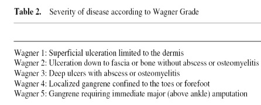

Diabetic Foot
Recalcitrant
ulceration and infection of the foot.
Epidemiology
- 3-6% diabetics à Foot Ulceration
- Amputation 16x in diabetics
- ↑Age
- Males
- Caucasians 4x > Asians
Etiology
- Neuropathy; particularly loss of sensory and
proprioceptive elements.
- PVD
- Microvascular disease
- Biomechanical
- Infection; impaired leukocyte activity
Neuropathy
- Nerves affected by ischaemia, gylcaemia
- 20-50% diabetics
- Numbness, Parasthesia, Hyperasthesia, Burning, Pain
- Autonomic neuropathy à Warm foot, bounding pulses, dry skin
PVD
- 20x more common in diabetics
- More distal disease than non-diabetics
- Often à Critical ischaemia without claudication
Biomechanical
- Loss of sensation and Repetitive trauma --> Charcot joint / Ulceration
- Exacerbated by ill-fitting shoes, poor vision
Microvascular
- Thickening of capillary basement membrane
Pathology
- Pure neuropathic 50%
- Pure ischaemic 10%
- Mixed 40%
Clinical
- Numbness / Pain (neuropathic / ischaemic)
- Joint pain / deformity
- Ulceration
- Osteomyelitis
- Gangrene
Test ABIs
Complete neurovascular exam
Radiographs to assess occult Charcot bone and joint destruction
/ collapse.
Wagener Classification of Ulcers

Management
Principles
MDT
- surgeon, endocrine, vascular, podiatrist
- optimise diabetes
- optimise blood supply to the leg
- control any sepsis; broad spectrum required.
Neuropathy
- Regular self-examination of feet
- Debride callus
- Proper footwear, Scotch cast boot
- TCA, Gabapentin, Carbamazepine
PVD
- Revascularise if possible
- Debride tissue
Biomechanical
- Rest, Immobilise in cast
- Resection of bony prominences may aid
treatment and healing.
Infective Osteomyelitis
- XR:
Sen; Spec 70%
- Probing to bone:
Sen 66%; PPV 89%
- WCC+Bone scan:
Sen 90%; Spec 80%
- Prolonged AB’s, Hyperbaric O2, Dressings
- Most need Amputation
Two-stage ulcer operations
1. deep wide resection / debridement of ulcer and
underlying soft tissue and any infected osseous structures
- cuture and deep biopsy
- remove all necrotic / avascular / devitalized tissues
2. Return for debridement and pulsatile irrigation and delayed
closure.